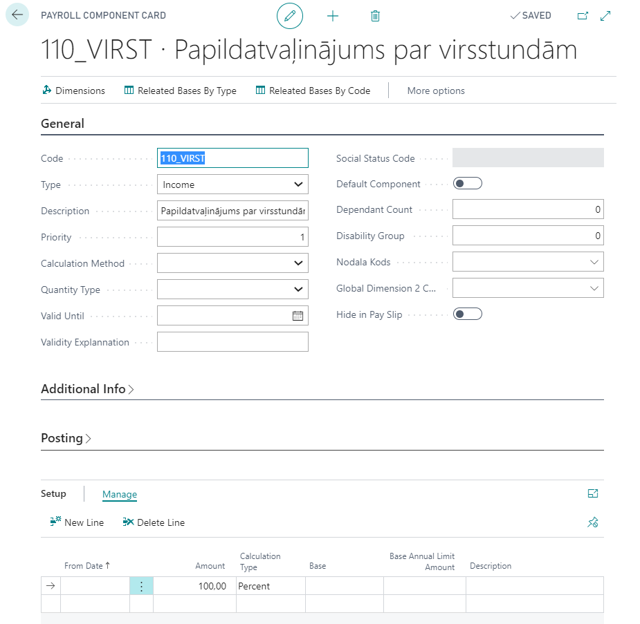

Overtime compensation with rest time
Setup
In order to be able to use this functionality, the following setup is required:
- Cause of Absence card and Payroll Component for rest time:


- Cause of Absence card and Payroll Component for additional vacation days


- In Overtime Setup is required to set the following fields:
- Default Usage Type - Pay Out, Day Off, Vacation Add.Day.
- Absence Code For DayOff Usage - set the code “VIRS_ATPUT”.
- Month Qty. For DayOff Usage - Indicates how many months ago need to look for available overtime, what will be used as Day Off.
- Hours Qty. For Day On Vacation - Number of overtime what can be transferred into one additional vacation day.
Registration of overtime
By using the function Calculate Overtime in the Accounting table, at the same time also entries to the Overtime Registration are added. In case if in Accounting's field Monthly Overtime value will be corrected to zero or the line with overtimes will be deleted, then also the corresponding record will be deleted from Overtime Registration.
Pay attention that in Accounting's field Monthly Overtime value will includes also those overtimes what will be postponed for the pay out from the previous months to the current month.
Overtime Registration is available from the Accounting's tool pane or by using system search. Overtime Registration includes following fields:
- Schedule Document No. - Schedule table No., where overtime is calculated.
- Employee No. - Number of employee.
- Usage Type - how the overtime will be reimbursed (Pay Out, Day Off, Vacation Add.Day). In case of overtime use divided into multiple variants (for example, pay out + day off, pay out + vacation add.day), then in this field will be stated the last usage type. To all entries will be added the default type, what is stated in Overtime Setup.
- Vacation Period No. - vacation period, where additional vacation day will be granted.
- Source Schedule Month - Related Accounting table's month.
- Source Schedule Year - Related Accounting table's year
- Schedule Employee Overtime - overtime count from related Accounting table.
- Usage Overtime - Overtime Usage (see chapter below) total entry value with filter on particular Accounting No. and employee No.
- Target Schedule Month - The month to which the remaining overtime is transferred.
- Target Schedule Year - Year, to which the remaining overtime is transferred.
- Moved Overtime - Overtime count, transferred to pay out to another month.
Overtime usage

Overtime Pay Out
Salaries list performs overtime calculation only for employees, who in appropriate period for overtimes in Overtime Registration usage type is Pay Out. Algas sarakstā darbinieka apmaksāta virsstundu skaits sakrīt ar Atlikušas virsstundas vērtību no tabulas Virsstundu uzskaite un ar Uzskaites Mēneša virsstundas vērtību. Virsstundu izmantošanas reģistrs sastāv no sekojošiem laukiem:
- Uzskaites dokumenta Nr. - Uzskaites dokumenta Nr. , kurā darbiniekam ir aprēķinātas virsstundas.
- Darbinieka Nr. - Darbinieka numurs.
- Ieraksta Nr. - Sistēmas automātiski piešķirtais numurs.
- Izmantošanas veids - Apmaksa, Brīvdiena, Atvaļinājuma papilddiena.
- Izmantotas virsstundas - Izmantoto virsstundu skaits.
- Avota tabulas ID / Avota tabulas nosaukums - Izmantoto virsstundu avota tabulas identifikācija.
- Primārā atslēga - Izmantoto virsstundu avota primārā atslēga, lai varētu caur šo lauku pārslēgties uz dokumentu, kurā tiek izmantotās virsstundas.
- Ieraksta datums un laiks - Ieraksta datums un laiks, kad ieraksts tika izveidots.
- Ieraksta lietotāja ID - Ieraksta lietotāja ID, kurš izveidoja ierakstu.
- Uzskaites mēnesis / Uzskaites gads - Mēnesis/ gads konkrētajam Uzskaites dokumenta Nr.
Virsstundu kompensēšana ar atvaļinājuma papildus dienām
Ja darbinieks vēlas tekoša mēneša virsstundas izmantot nākotnē kā atvaļinājuma papilddienu, tad pirms algas aprēķina darbiniekam Virsstundu uzskaitē atbilstošam ierakstam jāizmaina izmantošanas veids uz Atvaļ.papilddiena. Izmainīt izmantošanas veidu uz Atvaļinājuma papilddienu var ar funkciju Izmainīt virsstundu izmantošanas veidu. Funkcijas filtrā obligāti jānorāda uzskaites dokumenta Nr., kuram jāizmaina izmantošanas veids.
Papildatvaļinājuma dienu piešķiršana notiek Virsstundu uzskaites tabulā ar secību:
- rindai (-ām) ar izmantošanas veidu Atvaļinājuma papilddiena jānorāda darbinieka atvaļinājuma perioda Nr., kurā jāizveido ieraksts par papildatvaļinājuma piešķiršanu.
- cilnē Darbības palaist funkciju Ģenerēt papildus atvaļinājuma dienas.
Atvaļinājuma periodos ierakstu par virsstundām piešķirto papildatvaļinājumu var atcelt tikai no Virsstundu uzskaites tabulas ar funkciju Atcelt ģenerētas papildatvaļinājuma dienas.
Pēc papilddienas ģenerēšanas tiks automātiski izveidoti:
- ieraksts par virsstundu izmantošanu;
- ieraksts par papildatvaļinājuma dienas piešķiršanu noradītā Atvaļinājuma periodā.
Pēc papildatvaļinājuma piešķiršanas Atvaļinājuma periodā, darbiniekam var iegrāmatot personāla rīkojumu par papildus atvaļinājuma prombūtni.
Virsstundu kompensēšana ar apmaksātām atpūtas dienām
Ja darbinieks vēlas tekoša mēneša virsstundas izmantot nākotnē kā brīvdienu atpūtai, tad pirms algas aprēķina darbiniekam Virsstundu uzskaitē atbilstošam ierakstam jāizmaina izmantošanas veids uz Brīvdiena.
Izmainīt izmantošanas veidu uz Brīvdienu var arī ar funkciju Izmainīt virsstundu izmantošanas veidu. Funkcijas filtrā obligāti jānorāda uzskaites dokumenta Nr., kuram jāmaina izmantošanas veidu.
Virsstundu izmantošanas veidu var koriģēt tieši no Uzskaites, izmantojot rindas pogu Virsstundu uzskaite.
Brīvdienas piešķiršana notiek ar personāla rīkojuma grāmatošanu vai prombūtnes reģistrāciju žurnālā caur ierakstu ar prombūtnes iemesla kodu VIRS_ATPUT (aprakstīts virsstundu Uzstādījumu nodaļā).
Pēc personāla rīkojuma grāmatošanas vai prombūtnes reģistrācijas, automātiski veidojas ieraksts par virsstundu izmantošanu.
Apmaksa par brīvdienu būs aprēķināta algas sarakstā, kas sakrīt ar prombūtnes norādīto aprēķina gadu un mēnesi.
Virsstundu pārcelšana uz citu periodu
Ir iespējams viena perioda atlikušās virsstundas pārcelt uz citu periodu. Virsstundu pārcelšana notiek ar Virsstundu uzskaite funkciju Izmainīt Virsstundu izmantošanas veidu. Obligāti filtrā jānorāda uzskaites dokumenta Nr., no kura pārceļ virsstundas. Pirms virsstundu pārcelšanas darbiniekam obligāti jābūt izveidotai uzskaitei par periodu, uz kuru plānots pārnest virsstundas.
Virsstundu pārcelšanas rezultāts:
- Izmantošanas veids periodā, no kura pārceltās virsstundas, izmainīts uz vērtību, kas bija piemērota pārcelšanas funkcijas logā.
- Atlikušas virsstundas periodā, no kura pārceltās virsstundas, ir 0
- Uzskaites darbinieka virsstundas periodā, uz kuru pārceltās virsstundas, palielinātas par pārcelto stundu skaitu.
- Pārcelšana piefiksēta speciālajos pārvietoto stundu laukos.
Jāņem vēra ka pārceltās virsstundas ar izmantošanas tipu Apmaksa būs pievienotas uzskaitē pie Mēneša virsstundām. Rekomendējam veikt virsstundu pārcelšanu pēdējā solī (pirms Virsstundu aprēķināšanas), kad uzskaite ir korekta un nav vairs plānots mainīt datus.
Gadījumā, ja darbinieks būs izdzēsts no uzskaites, veiktā virsstundu pārcelšana tiks anulēta - virsstundu uzskaites dati atgriezīsies uz virsstundu atlikumu, kas bija līdz pārcelšanai. Gadījumā, ja jāatceļ virsstundas pārcelšanas operācija, tad Virsstundu uzskaitē laukos Apmaksa uzskaites mēnesis un Apmaksa uzskaites gads jāievada tukšas vērtības.